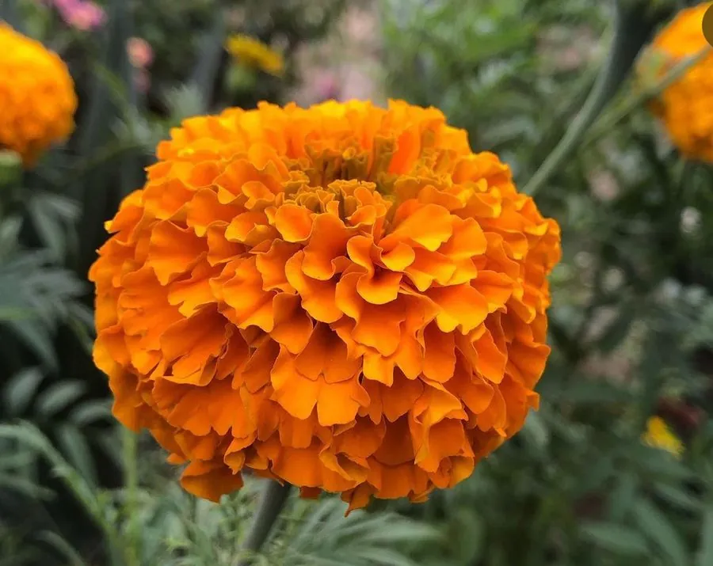

花卉与草本 · 植物界
万寿菊 Tagetes erecta

菊科一年生草本，花橙黄如绒球，可提取叶黄素、驱赶线虫，在墨西哥亡灵节中用作祭花，是重要的经济花卉。
- 分类
- 门被子植物门纲木兰纲目菊目科菊科属万寿菊属
- 栖息环境
- 墨西哥的草原与山坡，喜温暖、阳光充足
- 地理分布
- 原产墨西哥，中国各地广泛栽培，云南、山东为主要种植区
- 保护级别
- 暂无评估
物种志
万寿菊为菊科万寿菊属一年生草本，株高 50–150 厘米，茎直立粗壮，多分枝。叶片羽状全裂，裂片披针形，边缘有锯齿，揉碎后有特殊气味。头状花序单生，直径 5–10 厘米，舌状花多层、橙黄或金黄，重瓣品种形似绒球，花期 7–9 月，果期 9–10 月。
万寿菊原产墨西哥，喜温暖、阳光充足的环境，适应性强，耐干旱和瘠薄，但怕霜冻和积水。它是重要的经济花卉，花瓣富含叶黄素，可提取天然色素用于饲料和食品着色；植株根系的分泌物能抑制根结线虫，常被种在番茄、马铃薯田间作伴生植物。在墨西哥，万寿菊是亡灵节祭坛上的传统花卉，被认为能为亡魂指引回家的路。
形态与习性
- 株高50–150 厘米，茎直立多分枝
- 花期7–9 月，单株花期约 2 个月
- 果期9–10 月，瘦果线形
- 光照喜充足阳光
- 水分耐旱，忌积水
- 土壤疏松、排水良好的壤土，耐瘠薄
- 主要用途观赏、提取叶黄素、驱线虫
趣味知识
- 万寿菊根部会分泌抑制线虫的物质，常与番茄、马铃薯间作。
- 花瓣富含叶黄素，是天然饲料着色剂的重要来源。
- 在墨西哥亡灵节，万寿菊被视为为亡魂指引归途的花。
- 揉碎万寿菊叶片会闻到浓烈气味，有人形容为“臭菊花”。